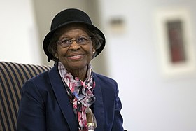

Gladys West
Gladys Mae West, nascida Gladys Mae Brown, é uma matemática norte-americana que teve papel fundamental no desenvolvimento e criação do GPS.
Uma de suas atribuições em Dahlgren era a de coletar dados de localização espacial dos satélites em órbita e depois inserir os dados nos supercomputadores da base, usando um programa rudimentar para analisar elevações de superfície. Trabalhou por dias coletando dados e realizando cálculos complexos, grata por ter contato não apenas com a matemática como também com vários cientistas de renome. Seu supervisor lhe recomendou como diretora do projeto do satélite Seasat, o primeiro satélite que poderia fazer sensoreamento remoto dos oceanos através de radar.
História da vida da Gladys
- Nascida no Condado de Dinwiddie, em 1931, Gladys não se interessava por plantações de algodão ou tabaco, que era o trabalho dos pais e dos amigos, e sabia que a melhor maneira de deixar o campo seria através da educaçãoimage.
- Quando estava no ensino médio, ela soube que os melhores alunos do último ano poderiam ganhar uma bolsa de estudos para a Universidade de Virgínia, Gladys se empenhou nos estudos e se formou como a primeira da classe.
- Com bolsa de estudos para a universidade, ela se graduou em matemática e por dois anos lecionou no Condado de Sussex antes de voltar para a faculdade a fim de obter um mestrado.
- Em 1956, ingressou na base naval de Dahlgren, sendo a segunda mulher negra a ser empregada na instituição. Foi na base que ela conheceu seu marido com quem casou em 1957

Confira mais sobre essa incrível Matemática neste Artigo.